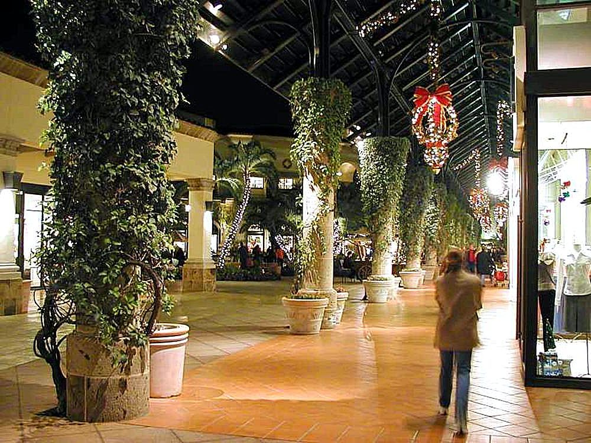
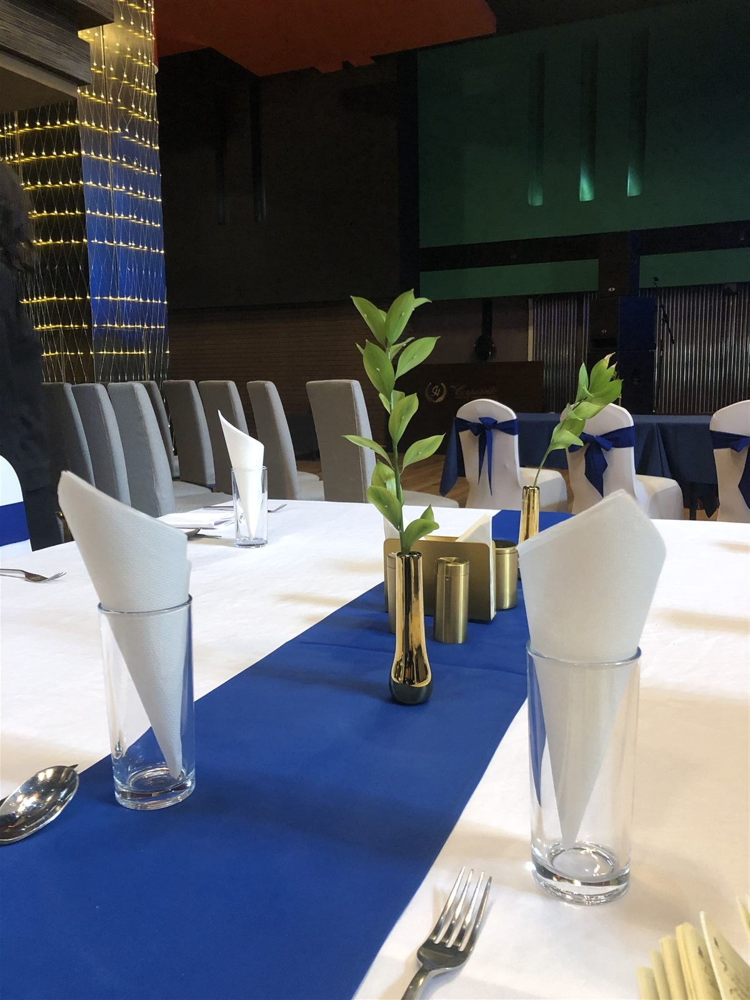
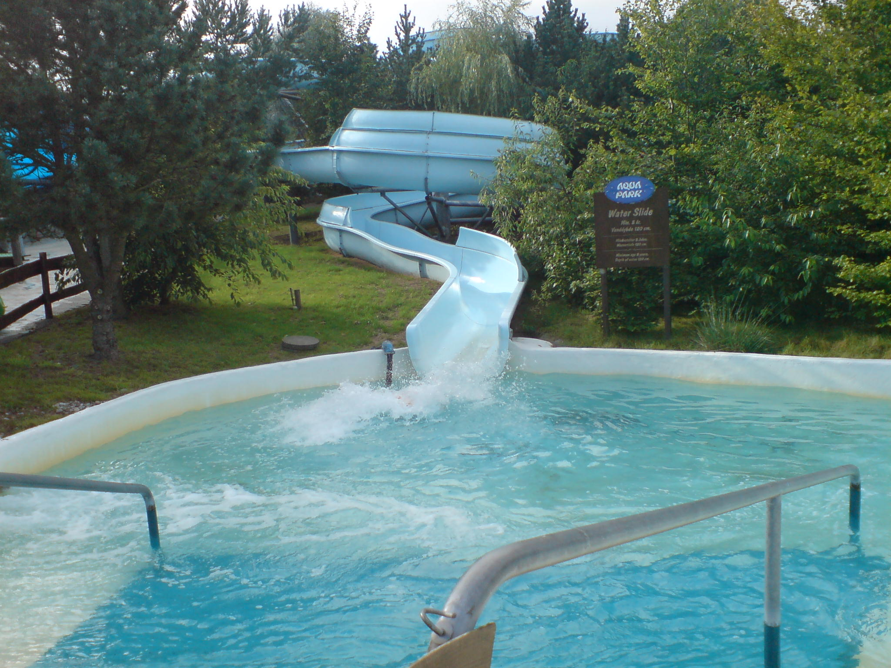
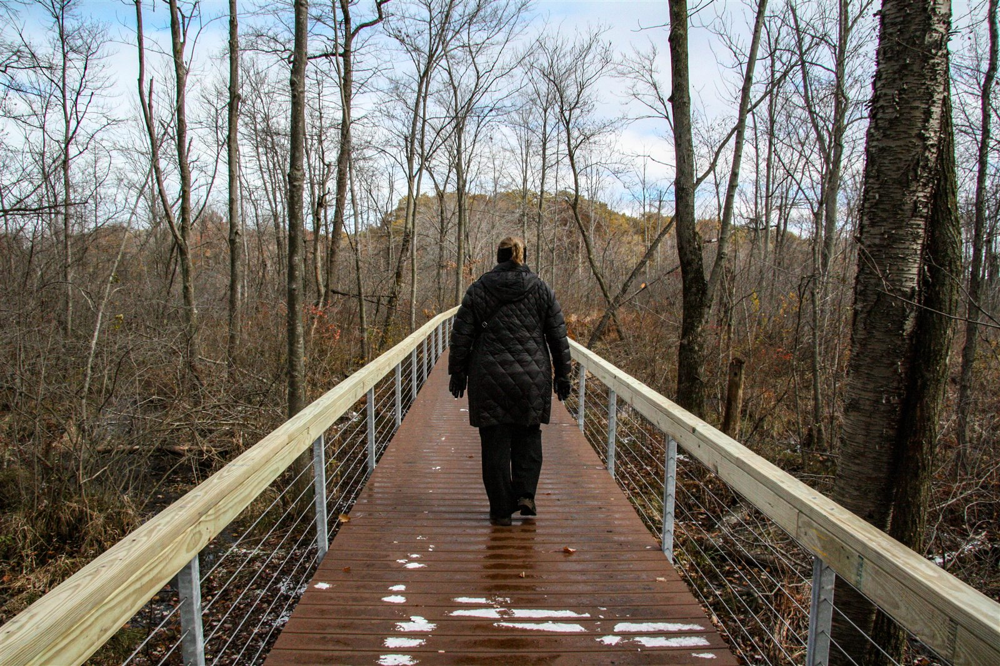
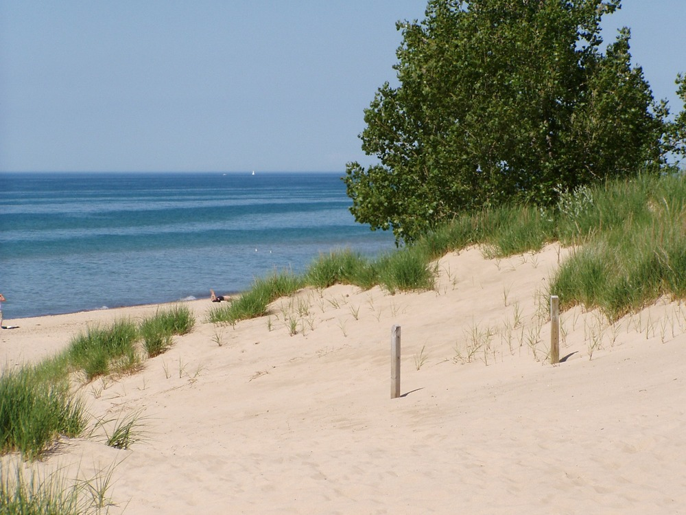
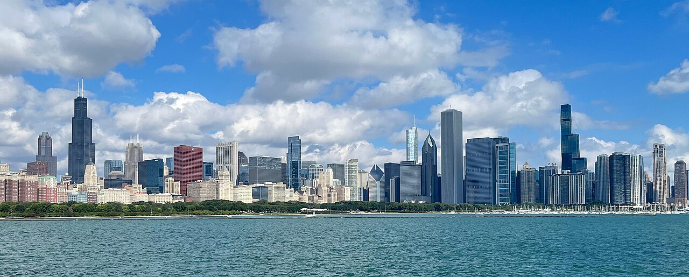

Southlake Mall
Browse a popular Merrillville shopping destination with a variety of stores and services.
Explore the region
Make Clarion Inn Merrillville your starting point for Northwest Indiana shopping, dining and adventure.

Browse a popular Merrillville shopping destination with a variety of stores and services.

Explore the area's broad selection of restaurants, shops and everyday conveniences.

Plan seasonal recreation at this Northwest Indiana family attraction.

Discover lakeshore scenery, outdoor recreation and the natural beauty of the region.

Explore regional events, outdoor spaces and destinations across the area.

Use Merrillville as a practical base when your itinerary includes a day in Chicago.
The shopping, dining and water-slide photographs are representative regional-travel imagery and do not depict a specific listed business. Check current hours, admission details and travel conditions directly with each destination.
Photo sources: public-domain or CC0 files from Wikimedia Commons for shopping, dining, water recreation, Indiana Dunes trail and Indiana Dunes shoreline. Chicago skyline by Dr. Chris Stantz, CC BY-SA 4.0; displayed with responsive cropping.